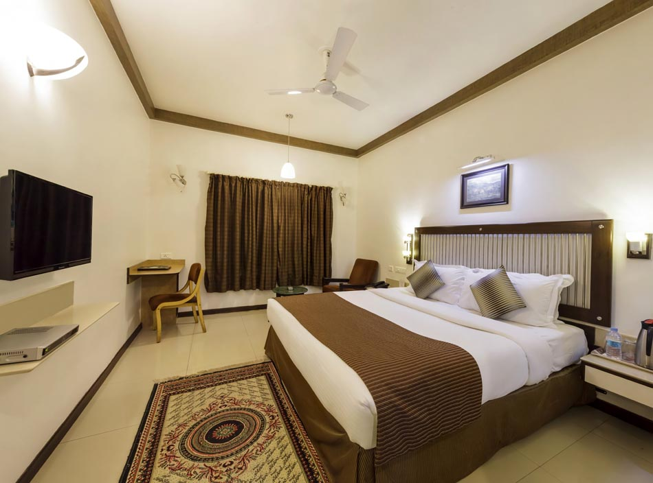
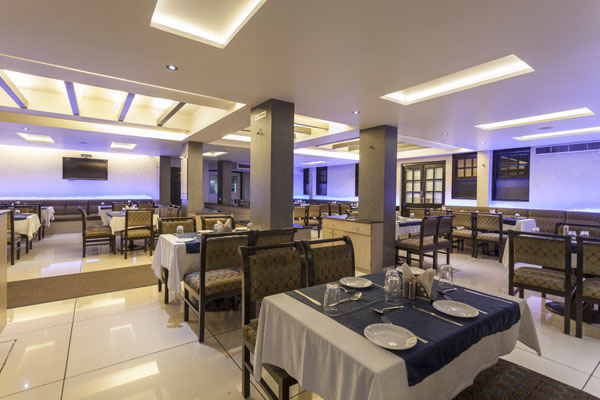
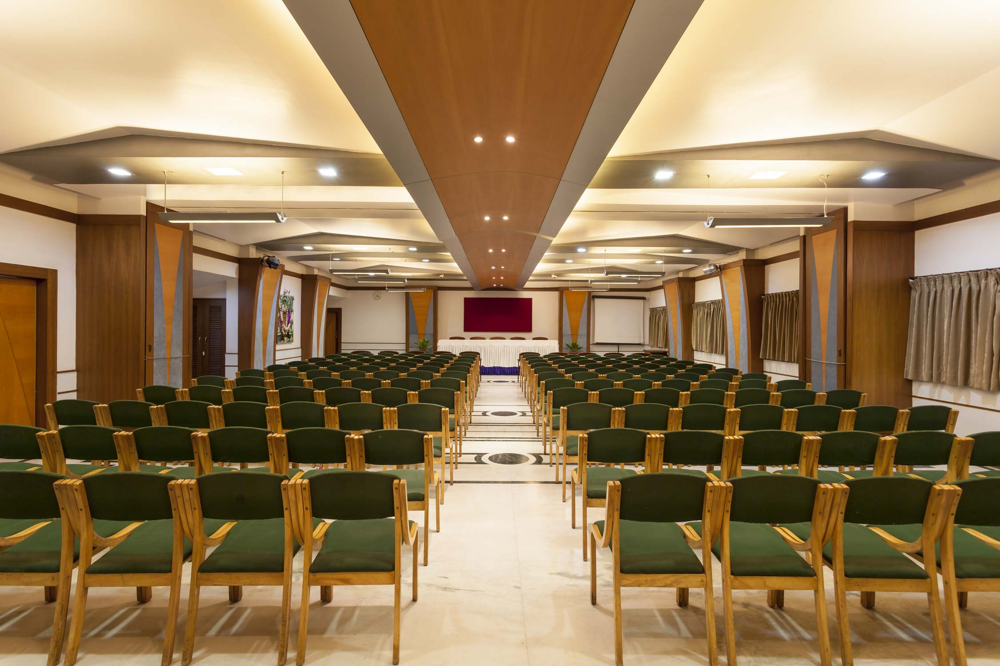

Address: 39, A/2,Tarabai Park, Kolhapur – 416003,
Maharashtra,India.
Email : fro@hotelvrishali.com, banquet@hotelvrishali.com
Phone : +91 – 231 – 2651337
Website: hotelvrishali.com
We started off with humble beginnings in 1974, Established as Star Hotel in 1995. Vrishali on many occasions has set the benchmark in hospitality for other hotels in Kolhapur be it launching, WI-FI or buffet breakfast for the room guests.
Today, we are set for further expansion falling in line with our motto to keep our guests happy. We are always here to serve with a smile.



Hotel Vrishali Executive offers a selection of well appointed rooms. The décor is of highest standard with carefully crafted blend of aesthetics and modern amenities commensurate for the taste of our varied guests.
Vrishali Executive is one elegant business hotel in Kolhapur which satiates the requirements of business travelers as well as vacationers alike. Rated 3 Stars, it is close to the business hub of the city while all major tourist attractions like the Mahalaxmi Temple, Jyotiba Temple, Panahala etc are just a stone’s throw away making Hotel Vrishali Executive one of the most sought after hotels by tourists and business travelers. Relatively a new addition to the long list of hotels in Kolhapur, it has already carved a niche for itself in the hospitality arena. Efficient services with warm hospitality are the maxim of Vrishali Executive as each guest is made to feel special with personal attention and care.